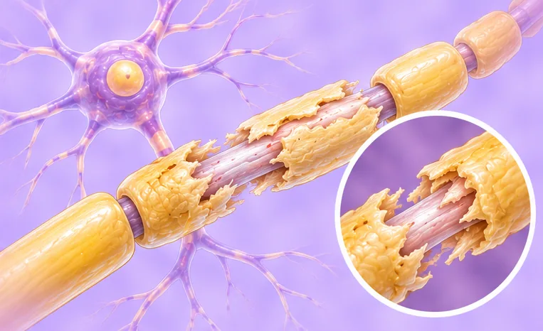

Guillain-Barré syndrome
A rare condition where the body's defences attack the nerves, causing weakness
What it is
The immune system mistakenly attacks the nerves, usually after an infection. Weakness and tingling often start in the feet and can spread upward, and it needs urgent care in hospital.
- Nerves of legs, arms, face
- Any age; rare
- Tingling and weak legs
- Which doctor
- Go to hospital now; brain and nerve doctor (neurologist)
- Common in
- Rare; can affect any age, often after an infection
- Contagious
- No
- Course
- May worsen over days to weeks; most recover slowly with hospital care
Common signs

Numb, tingling feetPeripheral neuropathy 
Legs feel weakLeg weakness 
Hard to walk farReduced walking tolerance 
Hard or painful to swallowDysphagia 
Lower back painLumbago
Why it happens

The cause is not fully knownIdiopathic
Other causes
- The immune system attacks the nerves by mistake
- Often follows a stomach bug or a cough and cold a few weeks before
- Rarely follows a vaccine or surgery
See a doctor first if
- Trouble breathing, or a weak voice or cough: call 999
- Trouble swallowing or choking on food: go to hospital now
- Weakness or tingling that spreads quickly up the legs or into the arms: go to hospital now
- Cannot stand or walk, or the face becomes weak
- Racing heart, fainting, or very high or low blood pressure
If any apply, please see a doctor before a session.
This page is general information. Please keep taking your normal medicine and keep seeing your doctor.
Keep taking your normal medicine and keep seeing your doctor. Our session is a gentle support and does not replace medical care.
Looking after yourself

Rest wellRest 
Make the home safe from fallsFall prevention
More ways to look after yourself
- Go to hospital quickly; do not wait at home
- During recovery, follow the plans from your doctor and rehab team
- Ask family and friends for support; recovery can be slow
Tell your therapist
- Numb or tingling arm
- Numb or tingling leg or foot
- Weak leg or foot
- A heart condition
- High blood pressure
- Pacemaker or metal implant
Your therapist will go through this with you before starting.
Questions and answers
What is Guillain-Barré syndrome?
A rare condition where the body's defences attack the nerves, causing weakness. The immune system mistakenly attacks the nerves, usually after an infection. Weakness and tingling often start in the feet and can spread upward, and it needs urgent care in hospital.
What are the common signs of Guillain-Barré syndrome?
Numb, tingling feet · Legs feel weak · Hard to walk far · Hard or painful to swallow · Lower back pain
Why does Guillain-Barré syndrome happen?
The cause is not fully known
How can I look after myself with Guillain-Barré syndrome?
Rest well · Make the home safe from falls
Can an AI Body Master session help with Guillain-Barré syndrome?
A session is gentle, needle-free meridian support for your wellbeing. It does not treat or cure Guillain-Barré syndrome and never replaces your medicine or your doctor. Tell your therapist about it before the session starts.
Related conditions
- Alzheimer's disease
- Viral meningitis
- Viral encephalitis
- Restless legs syndrome
- Stroke with bleeding (haemorrhagic infarction)
- Cluster headache
- Herpes simplex encephalitis
- Low intracranial pressure (intracranial hypotension)
- Cataract
- Seborrhoeic dermatitis (dandruff-type rash)
- Peeling lips (exfoliative cheilitis)
- Tonsil keratosis
References: General information based on public health sources such as Mayo Clinic, NHS, Cleveland Clinic and NCBI StatPearls.
Page updated: 2026-11-01